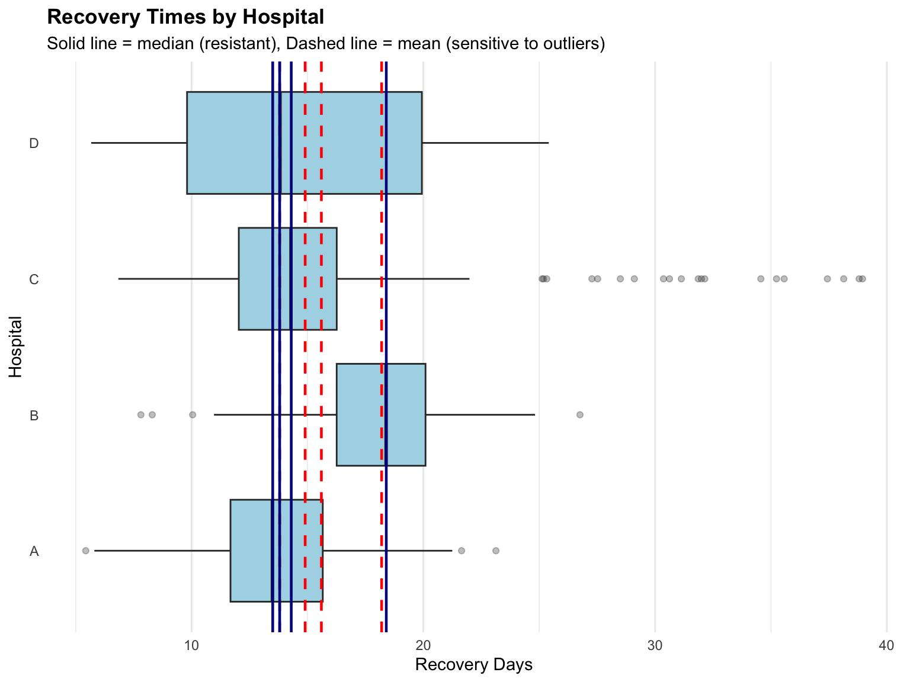
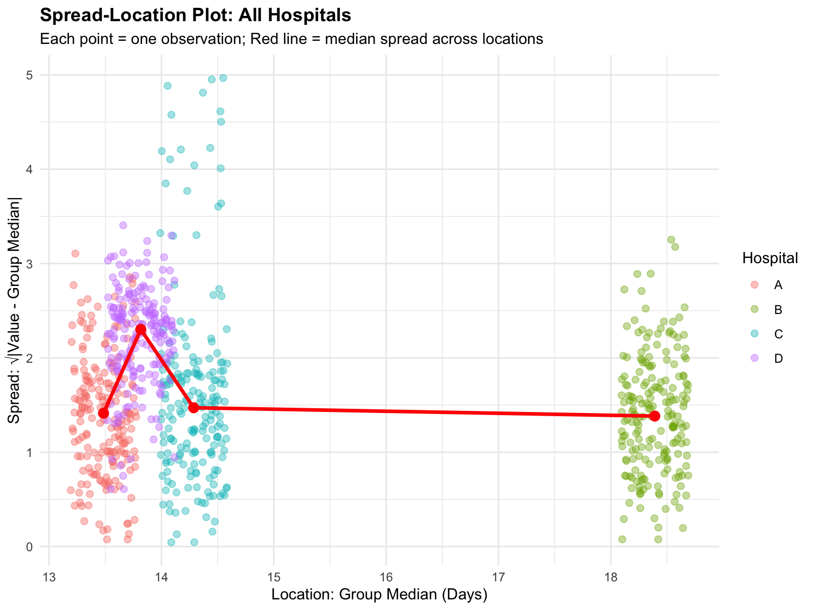
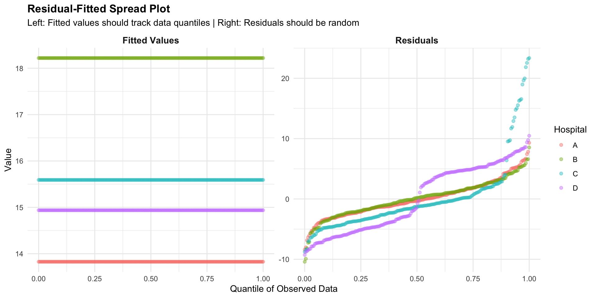
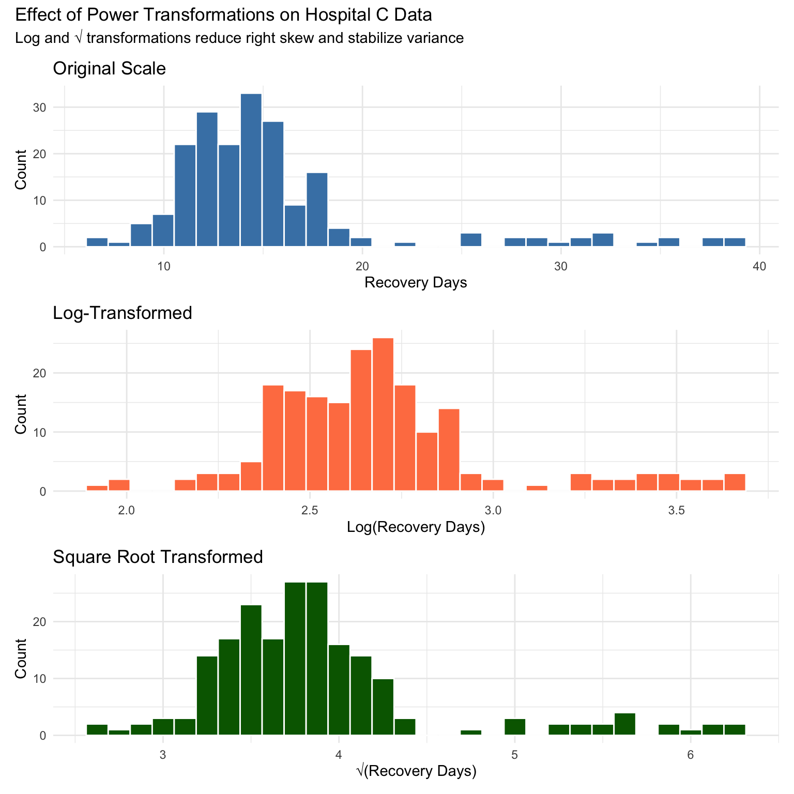

# Required packages
required_packages <- c(
"dplyr",
"ggplot2",
"tidyr",
"patchwork",
"moments"
)
# Install missing packages
new_packages <- required_packages[!(required_packages %in% installed.packages()[,"Package"])]
if(length(new_packages)) install.packages(new_packages)
# Load packages
library(dplyr)
library(ggplot2)
library(tidyr)
library(patchwork)
library(moments)
# Set theme
theme_set(theme_minimal())Understanding Univariate Data: Location and Spread
Following William Cleveland’s Visualizing Data
Introduction
This notebook follows William Cleveland’s systematic approach to understanding univariate data from his foundational book “Visualizing Data” (1993). Cleveland emphasized using visualization as an analytical tool for exploration, not just for presentation.
“Visualization is critical to data analysis. It provides a front line of attack, revealing intricate structure in data that cannot be absorbed in any other way.”
— William S. Cleveland, Visualizing Data (1993)
Cleveland’s approach: before building models or making inferences, deeply understand your data through visual exploration of location, spread, and distribution shape.
Simulated Example Data
We’ll use a simulated healthcare dataset to explore Cleveland’s concepts. Imagine we’re examining patient recovery times (in days) from a medical procedure across different hospitals.
set.seed(1234)
# Hospital A: Normal distribution, mean recovery time
hospital_a <- rnorm(200, mean = 14, sd = 3)
# Hospital B: Normal distribution, longer recovery
hospital_b <- rnorm(200, mean = 18, sd = 3)
# Hospital C: Skewed distribution with some very long recoveries
hospital_c <- c(
rnorm(180, mean = 14, sd = 2.5),
runif(20, min = 25, max = 40) # Some outliers
)
# Hospital D: Bimodal distribution (two distinct patient groups)
hospital_d <- c(
rnorm(100, mean = 10, sd = 2),
rnorm(100, mean = 20, sd = 2)
)
# Combine into data frame
recovery_data <- data.frame(
hospital = rep(c("A", "B", "C", "D"), each = 200),
recovery_days = c(hospital_a, hospital_b, hospital_c, hospital_d)
)Location & Spread
Cleveland emphasized understanding the “location” and “spread” of data, which in more common parlance just means measures of central tendency and variance/dispersoin. Different measures of location and spread tell different stories.
# Calculate measures of location for each hospital
location_summary <- recovery_data |>
group_by(hospital) |>
summarize(
mean = mean(recovery_days),
median = median(recovery_days),
q25 = quantile(recovery_days, 0.25),
q75 = quantile(recovery_days, 0.75),
n = n()
) |>
mutate(across(where(is.numeric), ~round(., 1)))
location_summary |>
knitr::kable(caption = "Measures of Location by Hospital")| hospital | mean | median | q25 | q75 | n |
|---|---|---|---|---|---|
| A | 13.8 | 13.5 | 11.7 | 15.7 | 200 |
| B | 18.2 | 18.4 | 16.3 | 20.1 | 200 |
| C | 15.6 | 14.3 | 12.0 | 16.3 | 200 |
| D | 14.9 | 13.8 | 9.8 | 19.9 | 200 |
Summary statistics help:
- Hospital A & B: Mean ≈ Median (symmetric distributions)
- Hospital C: Mean > Median (right-skewed due to outliers)
- Hospital D: Bimodal pattern obscures single “center”
Visual Comparison: Mean vs. Median
Visual comparison gets us farther.
ggplot(recovery_data, aes(x = recovery_days, y = hospital)) +
geom_boxplot(outlier.alpha = 0.3, fill = "lightblue") +
geom_vline(
data = location_summary,
aes(xintercept = mean),
color = "red",
linetype = "dashed",
linewidth = 0.8
) +
geom_vline(
data = location_summary,
aes(xintercept = median),
color = "darkblue",
linetype = "solid",
linewidth = 0.8
) +
labs(
title = "Recovery Times by Hospital",
subtitle = "Solid line = median (resistant), Dashed line = mean (sensitive to outliers)",
x = "Recovery Days",
y = "Hospital"
) +
theme_minimal() +
theme(
plot.title = element_text(face = "bold"),
panel.grid.major.y = element_blank()
)
Box plots are great ways to get quick looks at location and spread. From here, you can see that the median is a skew-resistant measure. It is not affected by extreme values. The mean is sensitive to outliers. Hospital C shows outliers pulling the mean upward.
This is a rather elementary point, obviously, but for me, Cleveland’s Visualizing Data has a certain genius about showing the complexity hiding under simple concepts, while reinforcing that elementary summary and visualization tools are often the most important tools in our toolbox.
Spread: Measuring Variability
Understanding how data varies around the center is as important and sometimes more important than knowing where the center is.
spread_summary <- recovery_data |>
group_by(hospital) |>
summarize(
sd = sd(recovery_days),
iqr = IQR(recovery_days),
range = max(recovery_days) - min(recovery_days),
cv = sd / mean(recovery_days) * 100
) |>
mutate(across(where(is.numeric), ~round(., 1)))
spread_summary |>
knitr::kable(
caption = "Measures of Spread by Hospital",
col.names = c("Hospital", "Std Dev", "IQR", "Range", "CV (%)")
)| Hospital | Std Dev | IQR | Range | CV (%) |
|---|---|---|---|---|
| A | 3.1 | 4.0 | 17.7 | 22.1 |
| B | 3.0 | 3.8 | 18.9 | 16.6 |
| C | 6.1 | 4.2 | 32.1 | 39.2 |
| D | 5.6 | 10.1 | 19.7 | 37.2 |
Common metrics for understand spread are:
- IQR (Interquartile Range): Resistant to outliers, focuses on middle 50% of data
- Standard Deviation: Sensitive to outliers (see Hospital C)
- Coefficient of Variation: Standardized measure of spread relative to mean
Below we’ll explore how you can use spread and location to understand the structure of the data, check assumptions you may need for modeling (e.g., constant variance), and even get insights into the data generating mechanism of your data.
Spread-Location (S-L) Plots
S-L plots help identify whether variability is constant or changes with the level of the data. This is fundamental to many modeling assumptions (e.g., for pooled t-tests, homoskedasticity).
Cleveland recommended comparing S-L relationships across groups to identify which groups exhibit constant spread vs. monotone spread (increasing variance with location).
# For each hospital, calculate the spread for each observation
# X-axis: Group median (location)
# Y-axis: sqrt(|observation - group median|) for each individual observation
spread_location_data <- recovery_data |>
group_by(hospital) |>
mutate(
group_median = median(recovery_days),
spread = sqrt(abs(recovery_days - group_median))
) |>
ungroup()
# Create spread-location plot with all hospitals
ggplot(spread_location_data, aes(x = group_median, y = spread, color = hospital)) +
geom_jitter(width = 0.3, alpha = 0.4, size = 2) +
stat_summary(fun = median, geom = "line", color = "red", linewidth = 1.2,
aes(group = 1)) +
stat_summary(fun = median, geom = "point", color = "red", size = 3) +
labs(
title = "Spread-Location Plot: All Hospitals",
subtitle = "Each point = one observation; Red line = median spread across locations",
x = "Location: Group Median (Days)",
y = "Spread: √|Value - Group Median|",
color = "Hospital"
) +
theme_minimal() +
theme(
plot.title = element_text(face = "bold"),
legend.position = "right"
)
How to Read S-L Plots:
Each point represents one observation, plotted at its group’s median on the x-axis. The y-axis shows how far that observation deviates from its group median (on the square root scale).
- Vertical bands of points: Each vertical band corresponds to one hospital, positioned at that hospital’s median recovery time
- Width of vertical band: Shows how variable the data is within that group (wider = more variability)
- Red line: Connects the median spread values across the four locations, revealing the spread-location relationship
Interpretation:
- Hospitals A & B: Narrow vertical bands at similar median locations (14 and 18 days) indicate low, consistent variability
- Hospital C: Wider vertical band shows higher variability due to outliers
- Hospital D: Bimodal distribution creates a different spread pattern
The red line is key: - Flat red line = constant spread (homoskedastic) → assumptions of pooled t-tests, ANOVA, OLS are satisfied - Upward sloping red line = monotone spread (heteroskedastic) → variance increases with location, violating homoskedasticity assumptions
Mean-Difference Plot
When comparing two hospitals or measurement methods, Cleveland recommended plotting the difference vs. the average. This reveals whether differences are constant or depend on the magnitude.
# Create comparison data with proper matching
# Hospital B: constant offset (same SD as A, just shifted)
# Hospital C: monotone spread (variance increases with magnitude)
set.seed(789)
# For Hospital B: pair each observation with a random one from Hospital A
hospital_b_pairs <- recovery_data |>
filter(hospital == "B") |>
slice_sample(n = 150) |>
mutate(
hospital_a_value = sample(recovery_data$recovery_days[recovery_data$hospital == "A"],
size = 150, replace = TRUE),
mean_value = (recovery_days + hospital_a_value) / 2,
difference = recovery_days - hospital_a_value,
comparison = "Hospital B vs A"
)
# For Hospital C: pair observations - this has outliers so will show monotone spread
hospital_c_pairs <- recovery_data |>
filter(hospital == "C") |>
slice_sample(n = 150) |>
mutate(
hospital_a_value = sample(recovery_data$recovery_days[recovery_data$hospital == "A"],
size = 150, replace = TRUE),
mean_value = (recovery_days + hospital_a_value) / 2,
difference = recovery_days - hospital_a_value,
comparison = "Hospital C vs A"
)
comparison_pairs <- bind_rows(hospital_b_pairs, hospital_c_pairs)
ggplot(comparison_pairs, aes(x = mean_value, y = difference)) +
geom_point(alpha = 0.4, color = "steelblue") +
geom_hline(yintercept = 0, linetype = "solid", color = "black") +
geom_smooth(method = "loess", se = TRUE, color = "red", linewidth = 1) +
facet_wrap(~ comparison, ncol = 2) +
labs(
title = "Mean-Difference Plots: Comparing Hospitals to Hospital A",
subtitle = "Red line shows average difference; horizontal = constant spread",
x = "Average of Two Measurements",
y = "Difference (Hospital - Hospital A)"
) +
theme_minimal() +
theme(
plot.title = element_text(face = "bold"),
strip.text = element_text(face = "bold")
)`geom_smooth()` using formula = 'y ~ x'
Interpretation:
- Hospital B vs A: Relatively flat red line around +4 days means constant spread (simple location shift)
- Hospital C vs A: Upward-sloping red line → monotone spread (variability increases at higher values due to outliers)
This type of plot is essential in method comparison studies and reveals patterns that simple correlation or regression would miss.
Residuals: Actual vs. Fitted Values
A fundamental concept in exploratory data analysis is the residual - the difference between what we observe and what we expect based on some model or summary.
Residual = Observed Value - Fitted Value
The “fitted value” can come from:
- Mean: Using the group mean as the fitted value
- Median: Using the group median as the fitted value
- Model: Using predictions from a regression model
Residuals help us understand:
- Patterns in variation: Are errors random or systematic?
- Outliers: Which observations deviate most from expectations?
- Model fit: Does our model capture the structure in the data?
Cleveland emphasized that examining residuals is often more informative than looking at raw data alone.
Box Plots of Residuals from Group Means
Let’s calculate residuals using each hospital’s mean as the fitted value:
# Calculate residuals from group means
residual_data <- recovery_data |>
group_by(hospital) |>
mutate(
group_mean = mean(recovery_days),
residual = recovery_days - group_mean
) |>
ungroup()
# Create box plots of residuals
ggplot(residual_data, aes(x = hospital, y = residual, fill = hospital)) +
geom_boxplot(alpha = 0.7, outlier.size = 2) +
geom_hline(yintercept = 0, linetype = "dashed", color = "red", linewidth = 1) +
labs(
title = "Residuals from Group Means",
subtitle = "Residual = Observed - Mean; Symmetric around zero = good fit",
x = "Hospital",
y = "Residual (Days)"
) +
theme_minimal() +
theme(
plot.title = element_text(face = "bold"),
legend.position = "none"
)
Interpretation:
- Hospital A & B: Residuals are roughly symmetric around zero (red dashed line)
- Hospital C: Positive outlier residuals → some patients take much longer than the mean
- Hospital D: Wider spread of residuals reflects the bimodal distribution
When residuals show patterns (asymmetry, increasing spread, etc.), this suggests the simple mean doesn’t fully capture the data structure.
Understanding Quantiles
The quantile is a key tool for studying spread and location together. A quantile answers the question: “What value do X% of my observations fall below?”
The pth percentile is the value where p percent of the data falls below it. For example:
- 25th percentile (p25): 25% of observations are below this value
- 50th percentile (p50): 50% of observations are below this value (this is the median)
- 75th percentile (p75): 75% of observations are below this value
Again, this is very elementary, but in practice proves very powerful.
How to Calculate Quantiles
Step 1: Sort your data from smallest to largest
Step 2: Find the position
For the pth percentile with n observations:
\[\text{Position} = p \times (n + 1)\]
Step 3: Get the value
- If the position is a whole number (like 25), use that observation
- If the position is fractional (like 25.25), interpolate between the two nearest values
There are a number of ways to calculate quantiles from Data. R’s quantile() function has 9 different ways to do it. Click this link to look through them.
Quantiles Are…
- Distribution-free
- Robust to outliers
- Easy to compare: Comparing quantiles across groups reveals differences in location, spread, and shape.
Residual-Fitted (R-F) Spread Plot
The r-f spread plot is a powerful diagnostic tool that shows the relationship between fitted values and residuals across quantiles of the data. This helps assess whether the model (in this case, using group means) adequately captures the data structure.
Cleveland recommended plotting: - Left panel: Fitted values vs. quantiles - Right panel: Residuals vs. quantiles
This side-by-side view reveals: - Whether fitted values match the data structure - Whether residuals show patterns or are randomly scattered - How spread changes across the distribution
# Calculate quantiles for each hospital
rf_data <- residual_data |>
group_by(hospital) |>
mutate(
quantile_rank = percent_rank(recovery_days),
fitted = group_mean
) |>
ungroup()
# Create data for both panels
rf_long <- rf_data |>
select(hospital, quantile_rank, fitted, residual) |>
pivot_longer(cols = c(fitted, residual),
names_to = "type",
values_to = "value") |>
mutate(
type = factor(type,
levels = c("fitted", "residual"),
labels = c("Fitted Values", "Residuals"))
)
# Create r-f spread plot
ggplot(rf_long, aes(x = quantile_rank, y = value, color = hospital)) +
geom_point(alpha = 0.4, size = 1.5) +
facet_wrap(~ type, ncol = 2, scales = "free_y") +
labs(
title = "Residual-Fitted Spread Plot",
subtitle = "Left: Fitted values should track data quantiles | Right: Residuals should be random",
x = "Quantile of Observed Data",
y = "Value",
color = "Hospital"
) +
theme_minimal() +
theme(
plot.title = element_text(face = "bold"),
strip.text = element_text(face = "bold", size = 11)
)
How to Read R-F Spread Plots:
Left panel (Fitted Values): - Points should form horizontal lines at each hospital’s mean - This shows that our “model” (group mean) is constant within each group
Right panel (Residuals): - Points should scatter randomly around zero - Hospital A & B: Residuals spread evenly across quantiles (good fit) - Hospital C: Positive residuals concentrated at upper quantiles (outliers) - Hospital D: Bimodal pattern creates two clusters of residuals
If residuals showed a systematic pattern (curve, increasing spread), this would indicate the group mean model is inadequate.
Power Transformations for Stabilizing Variance
When spread-location plots reveal monotone spread (variance changes with level), Cleveland advocated for power transformations to stabilize variance and make distributions more symmetric.
The Power Transformation Family
The power transformation family takes the form:
\[y^{\lambda} \text{ where } \lambda \text{ is the power}\]
Common transformations:
| λ | Transformation | Name | When to Use |
|---|---|---|---|
| 2 | \(y^2\) | Square | Compress right tail |
| 1 | \(y\) | Identity | No transformation needed |
| 0.5 | \(\sqrt{y}\) | Square root | Moderate right skew, count data |
| 0 | \(\log(y)\) | Log* | Strong right skew, multiplicative processes |
| -0.5 | \(-1/\sqrt{y}\) | Inverse square root | Very strong right skew |
| -1 | \(-1/y\) | Inverse | Extreme right skew |
When to Transform
- Monotone spread: Variance increases with the mean
- Strong skewness: Long tails distort analyses
- Multiplicative relationships: Percent changes, growth rates
- Meeting model assumptions: Many tests assume constant variance and normality
Example: Log Transformation for Hospital C
Hospital C has outliers creating right skew and monotone spread. Let’s see if log transformation helps.
# Create comparison of original vs log-transformed data for Hospital C
hospital_c_data <- recovery_data |>
filter(hospital == "C") |>
mutate(
log_recovery = log(recovery_days),
sqrt_recovery = sqrt(recovery_days)
)
# Create histograms
p1 <- ggplot(hospital_c_data, aes(x = recovery_days)) +
geom_histogram(bins = 30, fill = "steelblue", color = "white") +
labs(
title = "Original Scale",
x = "Recovery Days",
y = "Count"
) +
theme_minimal()
p2 <- ggplot(hospital_c_data, aes(x = log_recovery)) +
geom_histogram(bins = 30, fill = "coral", color = "white") +
labs(
title = "Log-Transformed",
x = "Log(Recovery Days)",
y = "Count"
) +
theme_minimal()
p3 <- ggplot(hospital_c_data, aes(x = sqrt_recovery)) +
geom_histogram(bins = 30, fill = "darkgreen", color = "white") +
labs(
title = "Square Root Transformed",
x = "√(Recovery Days)",
y = "Count"
) +
theme_minimal()
# Combine plots
(p1 / p2 / p3) +
plot_annotation(
title = "Effect of Power Transformations on Hospital C Data",
subtitle = "Log and √ transformations reduce right skew and stabilize variance"
)
Assessing the Transformation
# Compare summary statistics before and after transformation
transformation_summary <- data.frame(
Measure = c("Mean", "Median", "SD", "IQR", "Skewness"),
Original = c(
mean(hospital_c_data$recovery_days),
median(hospital_c_data$recovery_days),
sd(hospital_c_data$recovery_days),
IQR(hospital_c_data$recovery_days),
moments::skewness(hospital_c_data$recovery_days)
),
Log = c(
mean(hospital_c_data$log_recovery),
median(hospital_c_data$log_recovery),
sd(hospital_c_data$log_recovery),
IQR(hospital_c_data$log_recovery),
moments::skewness(hospital_c_data$log_recovery)
),
Sqrt = c(
mean(hospital_c_data$sqrt_recovery),
median(hospital_c_data$sqrt_recovery),
sd(hospital_c_data$sqrt_recovery),
IQR(hospital_c_data$sqrt_recovery),
moments::skewness(hospital_c_data$sqrt_recovery)
)
) |>
mutate(across(where(is.numeric), ~round(., 2)))
transformation_summary |>
knitr::kable(caption = "Comparing Transformations for Hospital C")| Measure | Original | Log | Sqrt |
|---|---|---|---|
| Mean | 15.59 | 2.69 | 3.89 |
| Median | 14.29 | 2.66 | 3.78 |
| SD | 6.11 | 0.32 | 0.68 |
| IQR | 4.23 | 0.30 | 0.56 |
| Skewness | 2.12 | 1.07 | 1.64 |
Log scale: Differences become ratios (additive turns to multiplicative); logs are typically preferred over other transformations because of this interpretive enefit
Choosing the Right Transformation
Cleveland suggested using data-driven approaches:
- Visual inspection: Try several transformations, plot results
- Symmetry: Choose transformation that makes distribution most symmetric
- Constant variance: Choose transformation that stabilizes spread-location relationship
The goal is not mathematical purity but getting an intimate undrstanding of your data.
Comparing Distributions: Q-Q Plots
Cleveland emphasized quantile-quantile (Q-Q) plots for comparing distributions. They plot quantiles of one distribution against another.
# Compare each hospital to Hospital A
comparison_data <- recovery_data |>
filter(hospital != "A") |>
group_by(hospital) |>
mutate(
quantile_rank = rank(recovery_days) / (n() + 1)
) |>
ungroup()
# Get corresponding quantiles from Hospital A
hospital_a_quantiles <- function(p) {
quantile(recovery_data$recovery_days[recovery_data$hospital == "A"], p)
}
comparison_data <- comparison_data |>
mutate(
hospital_a_value = sapply(quantile_rank, hospital_a_quantiles)
)
ggplot(comparison_data, aes(x = hospital_a_value, y = recovery_days)) +
geom_point(alpha = 0.5, color = "steelblue") +
geom_abline(slope = 1, intercept = 0, color = "red", linetype = "dashed") +
facet_wrap(~ hospital, ncol = 3) +
labs(
title = "Q-Q Plots: Comparing Hospitals to Hospital A",
subtitle = "Points on red line = identical distributions",
x = "Hospital A Quantiles",
y = "Other Hospital Quantiles"
) +
theme_minimal() +
theme(
plot.title = element_text(face = "bold"),
strip.text = element_text(face = "bold")
)
Interpreting Q-Q Plots:
- Hospital B: Points above line → consistently longer recovery times
- Hospital C: Curves up at high quantiles → longer tail (outliers)
- Hospital D: S-shaped curve → different distribution shape (bimodal vs. unimodal)
Q-Q Plots for Assessing Normality
A particularly important use of Q-Q plots is assessing whether data follows a normal distribution. This is done by plotting sample quantiles against theoretical normal quantiles.
Why This Matters
Many statistical methods assume normality: - t-tests - ANOVA - Linear regression (assumes normal residuals) - Confidence intervals based on standard errors
Cleveland emphasized visual assessment over formal tests because: 1. Visual patterns reveal the type of departure (skew, outliers, heavy tails) 2. Sample size affects formal tests (large n makes trivial departures “significant”) 3. We can see if departures matter for our specific purpose
How It Works
Normal Q-Q Plot: - X-axis: Theoretical quantiles from standard normal distribution - Y-axis: Observed quantiles from your data - If data is normal: Points fall on a straight line - If not normal: Systematic deviations reveal the problem
# Create Q-Q plots for each hospital
library(patchwork)
# Hospital A - approximately normal
p_a <- ggplot(recovery_data |> filter(hospital == "A"),
aes(sample = recovery_days)) +
stat_qq() +
stat_qq_line(color = "red", linewidth = 1) +
labs(
title = "Hospital A: Approximately Normal",
x = "Theoretical Quantiles",
y = "Sample Quantiles"
) +
theme_minimal() +
theme(plot.title = element_text(face = "bold"))
# Hospital B - normal but shifted
p_b <- ggplot(recovery_data |> filter(hospital == "B"),
aes(sample = recovery_days)) +
stat_qq() +
stat_qq_line(color = "red", linewidth = 1) +
labs(
title = "Hospital B: Normal (Different Mean)",
x = "Theoretical Quantiles",
y = "Sample Quantiles"
) +
theme_minimal() +
theme(plot.title = element_text(face = "bold"))
# Hospital C - right-skewed with outliers
p_c <- ggplot(recovery_data |> filter(hospital == "C"),
aes(sample = recovery_days)) +
stat_qq() +
stat_qq_line(color = "red", linewidth = 1) +
labs(
title = "Hospital C: Right-Skewed + Outliers",
x = "Theoretical Quantiles",
y = "Sample Quantiles"
) +
theme_minimal() +
theme(plot.title = element_text(face = "bold"))
# Hospital D - bimodal
p_d <- ggplot(recovery_data |> filter(hospital == "D"),
aes(sample = recovery_days)) +
stat_qq() +
stat_qq_line(color = "red", linewidth = 1) +
labs(
title = "Hospital D: Bimodal (Non-Normal)",
x = "Theoretical Quantiles",
y = "Sample Quantiles"
) +
theme_minimal() +
theme(plot.title = element_text(face = "bold"))
# Combine
(p_a + p_b) / (p_c + p_d) +
plot_annotation(
title = "Normal Q-Q Plots: Diagnosing Departures from Normality"
)
Reading the Patterns
1. Points on the line (Hospitals A & B): - Data follows normal distribution - Parametric methods are safe to use
2. Curve at upper end (Hospital C): - Right tail heavier than normal → right skew - Upper quantiles deviate upward from line - Common with positive data (income, recovery times) - Solution: Log or square root transformation
3. Curve at both ends (Hospital C outliers): - Points at extremes deviate from line - Indicates outliers beyond what normal distribution would produce - Action: Investigate outliers, consider robust methods
4. S-shaped curve (Hospital D): - Points curve below line at low end, above at high end - Distribution has shorter tails than normal (or is bimodal) - Indicates: Fundamentally different distribution shape - Action: Don’t assume normality, use distribution-free methods
5. Points below line at low end, above at high end: - Distribution has heavier tails than normal - More extreme values than normal distribution predicts - Common in financial data, measurement errors
Benefits of Q-Q Plots Over Formal Tests
Shapiro-Wilk test and similar tests have limitations:
| Formal Tests | Q-Q Plots |
|---|---|
| Binary answer (reject/fail to reject) | Shows what and how much departure |
| Very sensitive with large n | Assess practical significance |
| Don’t reveal type of departure | See if it’s skew, outliers, heavy tails, etc. |
| No guidance on fix | Suggests transformation strategy |
| Arbitrary α threshold | Professional judgment based on context |
Example: With n = 10,000, Shapiro-Wilk might reject normality for trivial departures that don’t affect t-test validity. Q-Q plot shows if departure matters for your analysis.
Practical Workflow
Cleveland’s approach to checking normality:
- Start with histogram: Get overall shape sense
- Create Q-Q plot: Diagnose specific departures
- Assess practical impact:
- Slight skew with large n? Probably fine.
- Strong bimodality? Serious problem.
- Outliers? Investigate before proceeding.
- Consider alternatives:
- Transform to achieve normality
- Use robust methods (median, bootstrap)
- Use distribution-free tests (Mann-Whitney, Kruskal-Wallis)
When Normality Doesn’t Matter
With large samples, Central Limit Theorem means: - Means are approximately normal even if data isn’t - t-tests, ANOVA are robust to moderate departures - More concerned about outliers than mild skewness
Focus Q-Q plot assessment on: - Small samples (n < 30): Normality matters more - Extreme violations: Bimodality, severe skew, major outliers - Residual diagnostics: In regression, check if residuals are normal
Example: Hospital C After Log Transformation
# Compare original vs log-transformed Hospital C
hospital_c_data <- recovery_data |>
filter(hospital == "C") |>
mutate(log_recovery = log(recovery_days))
p_orig <- ggplot(hospital_c_data, aes(sample = recovery_days)) +
stat_qq() +
stat_qq_line(color = "red", linewidth = 1) +
labs(
title = "Original Scale",
x = "Theoretical Quantiles",
y = "Sample Quantiles (Days)"
) +
theme_minimal() +
theme(plot.title = element_text(face = "bold"))
p_log <- ggplot(hospital_c_data, aes(sample = log_recovery)) +
stat_qq() +
stat_qq_line(color = "red", linewidth = 1) +
labs(
title = "Log-Transformed",
x = "Theoretical Quantiles",
y = "Sample Quantiles (Log Days)"
) +
theme_minimal() +
theme(plot.title = element_text(face = "bold"))
p_orig + p_log +
plot_annotation(
title = "Log Transformation Improves Normality",
subtitle = "Points align better with line after transformation"
)
Key observation: Log transformation brings the upper tail back toward the line, making distribution more symmetric and closer to normal.
Cleveland’s Message
“The goal is not to prove normality, but to understand your data’s shape and choose appropriate methods.”
Q-Q plots serve exploration and diagnosis, not hypothesis testing. Use them to: - Understand what you’re working with - Decide if assumptions are reasonable - Choose between parametric and robust methods - Transform when it aids interpretation
References
Cleveland, W. S. (1993). Visualizing Data. Hobart Press.